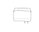
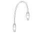
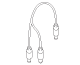
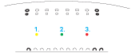
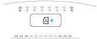

Крайне простой в использовании гаджет, который подключается к беспроводному интернету 4G (Mobile WiMAX) и раздает его через Wi-Fi. Легкий, удобный, с автономным питанием — используйте Yota Egg везде, где нужен интернет: дома, в офисе, в кафе, на улице, в автомобиле.
Интернет 4G от Yota — безлимитный, беспроводной, скоростной, доступный везде*. Одно нажатие кнопки — и интернет появится в любых находящихся рядом устройствах с Wi-Fi-доступом (ноутбуках, телефонах, плеерах, игровых приставках и т. д.), независимо от их операционных систем.
* в зоне покрытия сети Yota- Техническое наименование
- iWWR-1000R
- Модель
- Yota Egg
- Время использования (при полном заряде)
- При низкой загрузке: до 8 часов
При высокой загрузке: до 4 часов - WiMAX
- Технологический стандарт: IEEE 802.16e-2005
Частотный диапазон: 2,5-2,7 ГГц
Мощность сигнала: 200 мВт - Wi-Fi
- Технологический стандарт: IEEE 802.11b/g
Частотный диапазон: 2,4 ГГц
Мощность сигнала: 3 мВт - Аккумулятор
- Напряжение: 3,7 В, 2800 мА/ч
- Антенна
- Встроенная антенна
- Размеры
- 110×61,8×28,3 мм
- Вес
- 130 г
- Зарядное устройство
- DC 5 В/2 А
- Кабель питания от сети
- USB-24-TTA-стандарт, 24-штыревая вилка
- Кабель питания от ноутбука
- 2 USB-24-TTA-стандарт, 24-штыревая вилка
-
- Устройство Yota Egg (iWWR-1000R)×1
- Карта «Подключение к Yota»×1
- Краткое руководство пользователя×1
- Руководство пользователя×1
-  Адаптер питания×1
-  Кабель питания от сети×1
-  Кабель питания от ноутбука×1
-
Индикатор WiMAX
- Устанавливается соединение.
- Нет сети.
- Средний уровень сигнала.
- Хороший уровень сигнала.
-
 Обновление встроенного ПО.
Обновление встроенного ПО.
Индикатор уровня заряда
- Уровень заряда аккумулятора 0-20% или аккумулятор заряжается.
- Уровень заряда аккумулятора 20-50%.
- Уровень заряда аккумулятора 50-100%.
Индикатор Wi-Fi
- Wi-Fi включен и работает.
- Индикатор WiMAX
- Индикатор Wi-Fi
- Индикатор уровня заряда
- Разъем питания
-
Находясь в зоне покрытия сети, нажмите и удерживайте кнопку включения на нижней стороне устройства в течение 4 секунд, или до тех пор пока не загорится индикатор питания.
Устройство найдет сеть Yota и автоматически подключится к ней. С помощью устройства, оборудованного Wi-Fi, найдите беспроводную сеть — YotaXXXXXX, где ХХХХХХ соответствует последним 6 цифрам MAC-адреса Yota Egg, и подключитесь к ней. Yota Egg поддерживает стандарт Wi-Fi IEEE 802.11 b/g.
Откройте интернет-браузер и пройдите регистрацию на сайте www.yota.ru.
Активируйте Yota Egg, следуя инструкциям на сайте.
После прохождения регистрации и активации Yota Egg необходимо выключить его и включить снова для получения полного доступа в интернет.
Поздравляем! Вы подключились к сети Yota. Теперь вам доступен быстрый, безлимитный, беспроводной мобильный интернет и множество интересных сервисов. Узнайте больше на www.yota.ru .
Примечание. При первом включении устройство предоставляет Wi-Fi-сеть без включенного шифрования. В целях безопасности настоятельно рекомендуем вам изменить настройки безопасности и пароль пользователя. Для изменения настроек безопасности Wi-Fi необходимо зайти на веб-интерфейс устройства в раздел Wi-Fi. Веб-интерфейс устройства доступен по адресу http://192.168.1.1 .